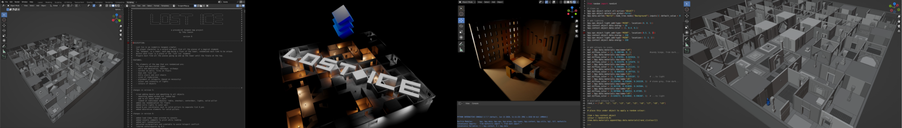
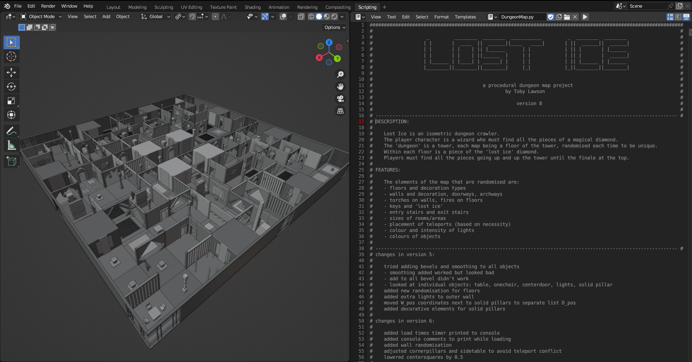
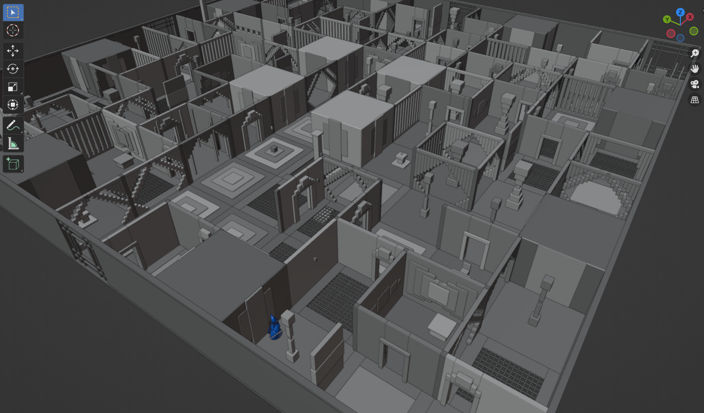
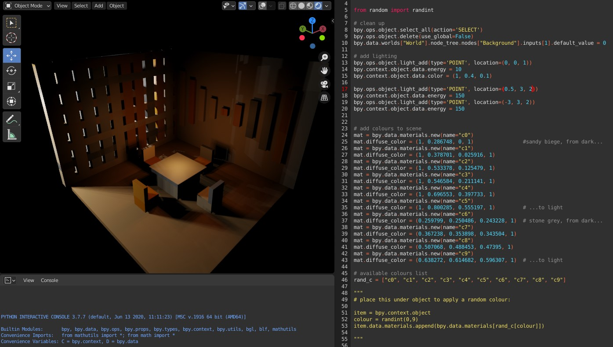
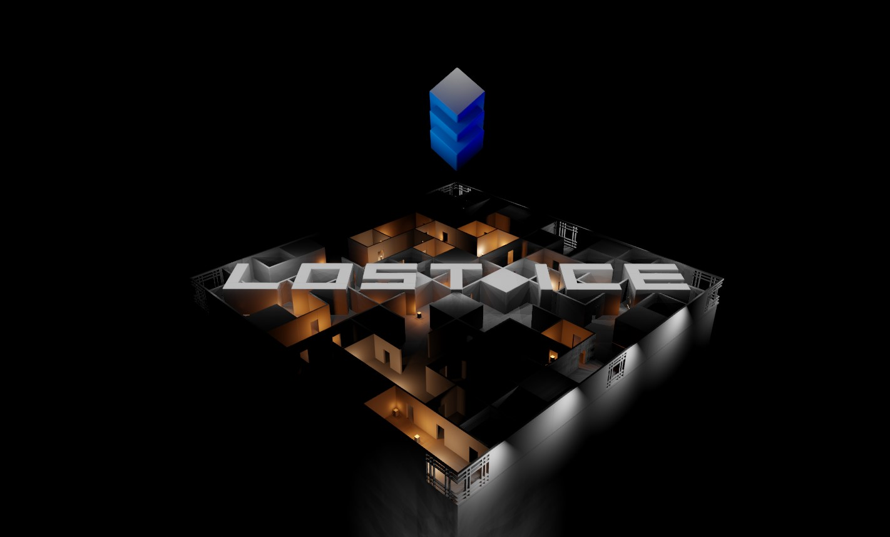
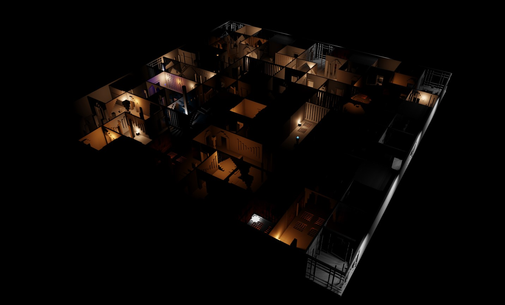
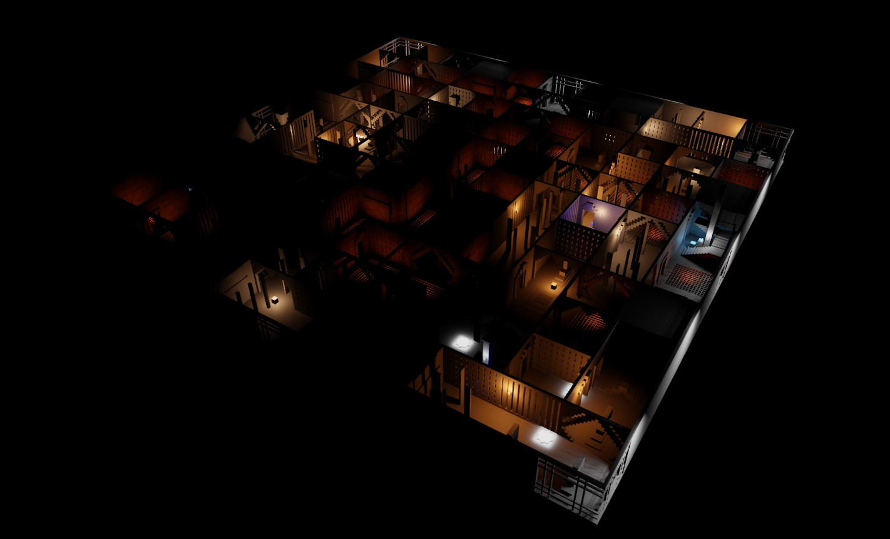
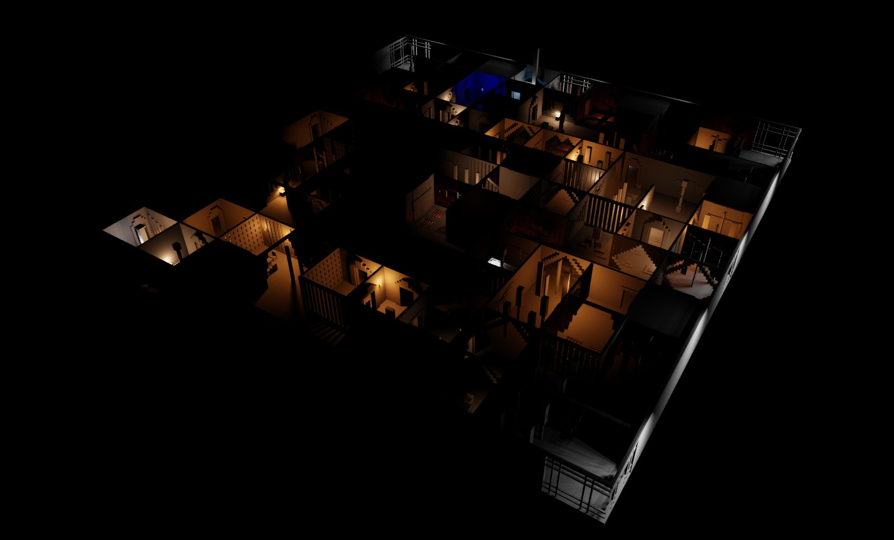

Lost Ice: Procedural Game Maps
Use procedural generation to create random and interesting maps for a video game.
Solo Programmer
Concept
I envisioned a fantasy adventure game where a wizard explores a labyrinthine tower: navigating challenging paths, solving puzzles and evading enemies. Starting at the ground floor the player character, the wizard, would make their way up the tower, progressing through randomly generated maze-like floors, ensuring each playthrough would offer a unique experience.
Inspiration
I was inspired by a classic puzzle game on the Nintendo Entertainment System from my childhood called ‘Solstice,’ in which the player navigates a complex and expansive castle. I reimagined the castle as a tower with an emphasis on creating literal mazes for each floor. I opted for an isometric perspective to enhance the visual complexity and nostalgic feel of the game.
Creation
I decided to create my randomised maps using the Blender 3D computer graphics software, writing the code in Python. The procedural generation algorithm I crafted was designed to create diverse and intricate maps for each tower floor of the game world.
Key elements included:
- Randomized Layouts:Each floor’s layout, including walls, doorways, and room configurations, was generated to form complex mazes.
- Environmental Details: Furniture, decorations, and lighting were randomly placed to enhance the immersive atmosphere.
- Interactive Elements: Enemies, puzzles, and teleporters were dynamically positioned to ensure varied gameplay.
The maps were constructed using a grid system to ensure seamless alignment of all elements, preventing visual glitches such as clipping.
Visual Showcase
Below are a series of images showing my code in action and the final results.
Testing the algorithm.
Map produced with the code without full lighting showing.
Coding and testing how room elements fit together.
Concept for a title screen for the game with randomised elements.
Here are three example maps that were generated with the code.
  Some close up screenshots of how different elements of the randomised maps came together.
Conclusions
The procedural generation code reliably produced unique and convincing maps, with all elements harmoniously integrated to create a logical and engaging structure. The maps demonstrated the potential for endless variation, greatly enhancing replayability.
Challenges
- Stairway Alignment: Aligning entry and exit points for stairs proved challenging. A potential solution involves fixing the stairway entry point at a consistent location on each floor. This would require some testing.
- Performance Issues: Multiple lighting sources sometimes caused crashes or significant slowdowns in Blender. This issue needs further optimization.
Learnings
- Reflection: I am highly satisfied with the diverse and interesting maps generated. Testing revealed that the maps were consistently intriguing and enjoyable, even from a gamer’s perspective. The individual parts came together in various random ways yet appeared curated and logical in structure.
- Future Direction: I plan to extend this project by implementing the generated maps in Unity, making the game playable and further refining the procedural generation process to enhance game dynamics and player engagement.